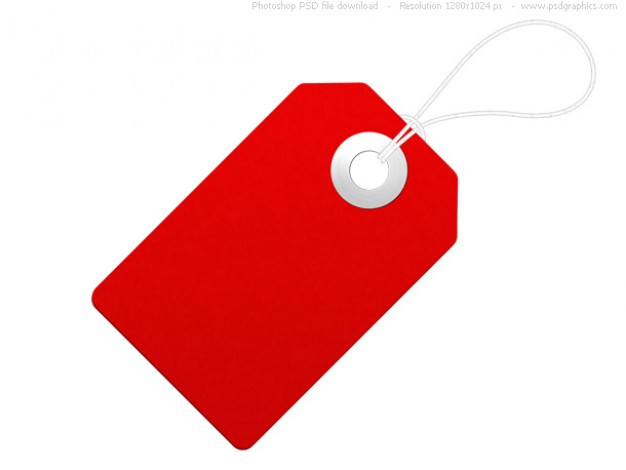
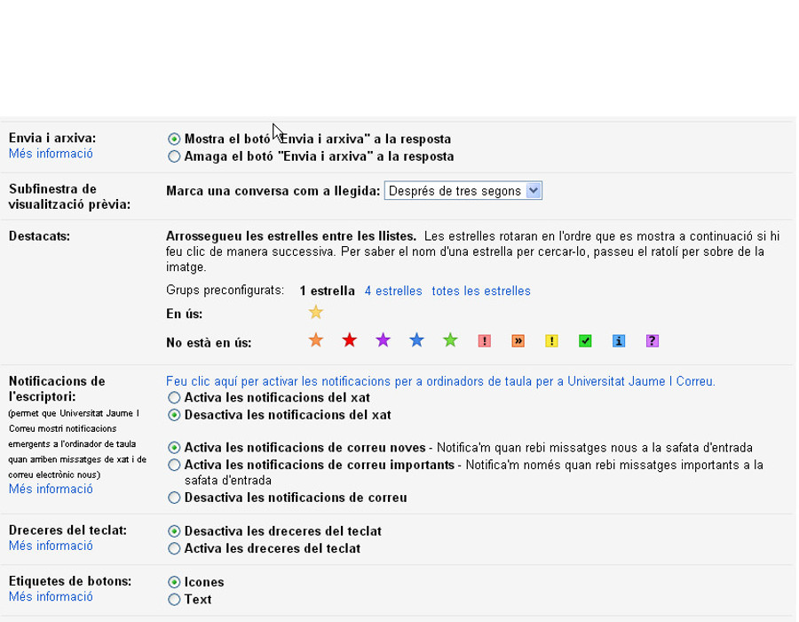
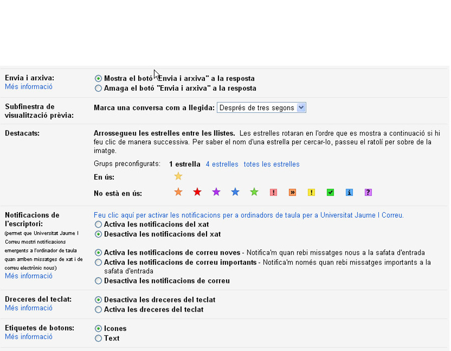

Google Calendar
Gmail
Configuración, filtros y etiquetas
Apreta la tecla → para avanzar.

Gmail

El día anterior vimos una introducción a algunas de las características menos conocidas que incorpora Gmail. Hoy nos centraremos en otras características interesantes:
- La configuración. Podemos variar determinados aspectos del interfaz para adaptarlo a nuestro gusto.
- Las etiquetas/carpetas. Explicaremos cómo gestionar nuestros correos clasificándolos por etiquetas.
- Filtros de correo. Finalmente, conoceremos cómo clasificar automáticamente aquellos correos que cumplan unos determinados criterios.

Carpetas y etiquetas

Son las utilidades que nos proporcionan desde Gmail para clasificar y ordenar el correo. Aunque conceptualmente nos dé la sensación que son utilidades totalmente diferentes, en su aplicación veremos que son exactamente el mismo concepto con 2 nombres.
- Clasificamos el correo en Grupo.
- Manetemos la bandeja de entrada más ordenada.
- Sin darnos cuenta ya los estamos utilizando, ya que todos los correos están etiquetados..
Carpetas

Es el concepto más fácilmente comprensible ya que en informática estamos acostumbrados a clasificar los datos en carpetas.
- Agrupamos todos los mails de la misma temática en la misma carpeta..
- Ejemplos: carpeta "trabajo", "ofertas comerciales", "padres de la clase del nene", etc.
- Sabemos que existen carpetas especiales: Enviados, Papelera, Spam, Borradores.
Etiquetas
Las etiquetas cambian un poco el concepto, ya no "almacenamos" el correo en una carpeta, sino que simplemente lo etiquetamos. Ventajas:
- Podemos tener un mail en 2 "carpetas" al mismo tiempo, asignando varias etiquetas al mismo mensaje..
- Nos da más versatilidad a la hora de buscar información.
- Las carpetas no existen, son etiquetas :)
Cambia de foto con las teclas: ↑ y ↓
Práctica

Vamos a probar la gestión de etiquetas a ver qué os parece.
- Crea una nueva etiqueta llamada "cursoCalendar2013".
- Marca algunos mensajes de tu buzón de entrada con esta etiqueta.
- Cambia el color de la etiqueta.
- Accede a la etiqueta y comprueba como se visualiza a modo de carpeta.
Subetiquetas
Las etiquetas están bien, pero no nos solucionan el problema de anidamiento de información, para eso activaron no hace mucho tiempo las sub-etiquetas.
- El concepto es el mismo que las subcarpetas.
Cambia de foto con las teclas: ↑ y ↓
Práctica
Vamos a probar la gestión de etiquetas a ver qué os parece.
- Crea una etiqueta llamada "cursos2013".
- Crea dentro una subetiqueta llamada "googlecalendar".
- Mueve el correo de la etiqueta que hemos creado anteriormente a la nueva etiqueta.
- Accede a la sección "Todos los correos", ¿cómo se visualizan las etiquetas?.
- Finalmente borra todas las etiquetas que hemos creado. ¿Se borran los correos?
Filtros
Los filtros no son más que aplicación de acciones automáticas en base a un determinado criterio que nosotros definimos. Ejemplos:
- Todo el correo de boss@uji.es se etiqueta como "faena" y marcado como "destacado"..
- El correo de pesao@uji.es o que en el título ponga "vendo opel corsa" directamente a la papelera.
¿Pero poner filtros suena a complicado, no? Qué va, es bastante fácil, aunque hay que ir con cuidado..
Filtros: criterio de búsqueda
El criterio de búsqueda determina el conjunto de mensajes a los que queremos aplicar un filtro.
- Unificado con la búsqueda.
- Podemos filtrar por remitente, destinatario, palabra, título, o fecha.
Una vez determinemos el criterio, podremos aplicar la acción que queramos en el filtro.
Filtros: acción a realizar
Ya hemos determinado el conjunto de mensajes que queremos filtrar, ¿qué queremos hacer con ellos?
- Omitir la bandeja de entrada.
- Marcarlo como leido, suprimirlo, o destacarlo.
- Asignarle una etiqueta.
- Reenviarlo a otra dirección de correo.
Una vez determinemos el criterio, podremos aplicar la acción que queramos en el filtro.
Cambia de foto con las teclas: ↑ y ↓
Filtros: gestión
Los filtros se gestionan desde la zona de configuración de Gmail que ahora veremos, es muy sencillo gestionarlos ya que simplemente veremos la lista de filtros que tenemos y borraremos aquellos que ya no nos interesen.

Cambia de foto con las teclas: ↑ y ↓
Práctica
Vamos a probar la creación de filtros.
- Haz una búsqueda que encuentre todos los mensajes enviados por horari@uji.es.
- Crea un filtro que etiquete esos mensajes como "horari", y aplícalo también a todas las conversaciones que ya tenías.
- Finalmente, accede a la gestión de filtros y bórralos.
Configuración

Al igual que en Google Calendar tenemos acceso a una sección de configuración donde podemos parametrizar el comportamiento de la aplicación.
- Cambiar de idioma.
- Conversaciones por página.
- Respuesta predeterminada: responder al remitente, responder a todos.
- Estilo de texto predeterminado.
- Activar/desactivar visualización de conversaciones.
Configuración
- Añadir un botón de "Enviar y archivar" en las respuestas.
- Mostrar notificaciones emergentes de chat o correo nuevo.
- Etiquetas de los botones: iconos o texto.
- Imagen propia que se visualizarán los destinatarios de nuestros correos.
- Activar/desactivar el añadir contactos automáticamente al grupo "Otros contactos".
- Firma de correo.
- Respuesta automática por vacaciones.
 

Cambia de foto con las teclas: ↑ y ↓
Práctica
- Accede al apartado de configuración de Gmail. Cambia algunas opciones para adecuarlas a la configuración que más te guste.
- Firma al pie. Establece una firma al pie si no la tienes ya siguiendo el estilo UJI que nos recomiendan desde el Servei de Comunicació/Publicacions, es este:
David Rubert Viana
Analista-programador
Aplicaciones
Servei d'Informàtica
Edifici de Rectorat
Universitat Jaume I
Av. Sos Baynat, s/n
12071 Castelló de la Plana (Spain)
+34 964 729 025
david.rubert@si.uji.es
Práctica
- ¿Sabrías configurarte un auto-respondedor por vacaciones?

Configuración bandeja de entrada
Desde este apartado podremos definir el tipo de bandeja de entrada por defecto, y personalizar las vista del buzón según las posibles clasificaciones de mensajes: prioritarios, destacados, no leidos, resto de correos. Ademas podremos:
- Activar/desactivar las marcas de los prioritarios.
- Permitir que los mensajes clasificados como importantes se salten los filtros y vayan al buzón de entrada.

Cambia de foto con las teclas: ↑ y ↓
Configuración cuentas
Podemos configurar varias opciones avanzadas de envío/recepción que tal vez nos puedan interesar:
- Definirnos nuevas identidades para enviar correo (siempre que existan). Por ejemplo, puede que nos interese mandar correo desde Gmail con el alias info@uji.es.
- Leer desde Gmail el correo de otra cuenta POP3. Podríamos leer y enviar correo de otra cuenta diferente dentro del mismo interfaz de Gmail.
- Delegar el acceso a tu cuenta a otra persona. No es más que permitir que otra persona acceda a todo tu correo, sin necesidad de que conozca tu contraseña.

Cambia de foto con las teclas: ↑ y ↓
Configuración de reenvío y acceso

Otro tema avanzado de configuración es el de reenvío de correo a otras cuentas, y acceso a la cuenta desde otros protocolos.
- Reenvío. Podemos reenviar todo el correo a otra cuenta diferente de correo.
- Acceso POP/IMAP Si queremos acceder al correo desde un cliente de escritorio tipo Outlook, deberemos tener activado el acceso a nuestra cuenta a través de POP o IMAP.

Cambia de foto con las teclas: ↑ y ↓
Más opciones de configuración
Finalmente, vamos a ver rápidamente algunas de las opciones de configuración adicioneales (no tan importantes) de las que disponemos.
- Xat. Podemos activar/desactivar el GTalk y cambiar algunas opciones de comportamiento.
- Modo offline. Si usamos chrome podemos activar el modo de funcionamiento offline de Gmail.
- Temas. Podemos cambiar la visualización del interfaz.
- Labs. Al igual que en el calendario, podemos activar funcionalidades adicionales que no vienen activadas por defecto.
Cambia de foto con las teclas: ↑ y ↓
Práctica
Vamos a probar algunas de estas opciones de configuración:
- Accede a la configuración del chat y personalizalo a tu gusto.
- Accede a la configuración de temas y prueba algún tema diferente al de por defecto.
- y prueba algún tema diferente al de por defecto.